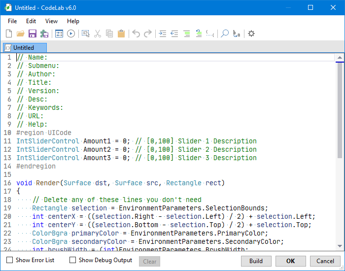

Main Window¶

Menus¶
See the Menus page for details.
Toolbar¶
See the Toolbar page for details.
Tab Bar¶
See the Tab Bar page for details.
Editor¶
See the Editor page for details.
Error List¶
See the Error List page for details.
Debug Output¶
See the Debug Output page for details.
Build Button¶
The build button can be used to compile your current script and run the effect on your current selection.
When you pause typing in the code editor for a few seconds, CodeLab will automatically run this Build process for you.
If build errors occur, they will be listed in the Error List pane.
OK Button¶
When you are happy with your effect, press the OK button to finalize the effect to your current selection.
Cancel Button¶
If you do not like your effect, press the Cancel button to close the CodeLab editor window WITHOUT applying any changes to your original image.
Warning
Canceling CodeLab will discard the contents of all tabs. Be sure to save any changes beforehand.